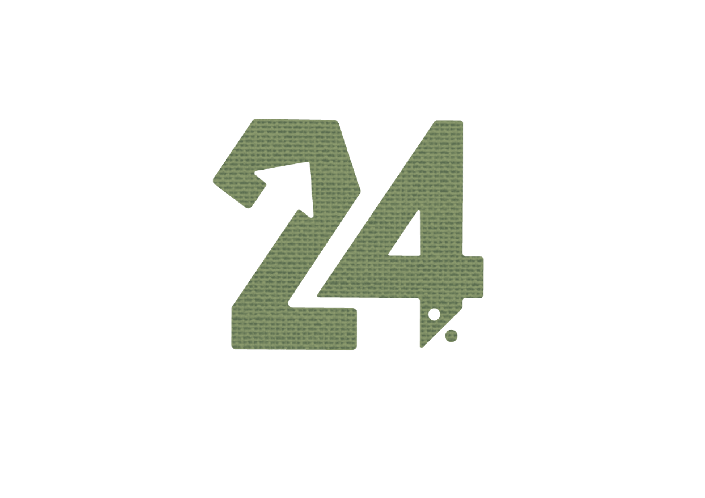
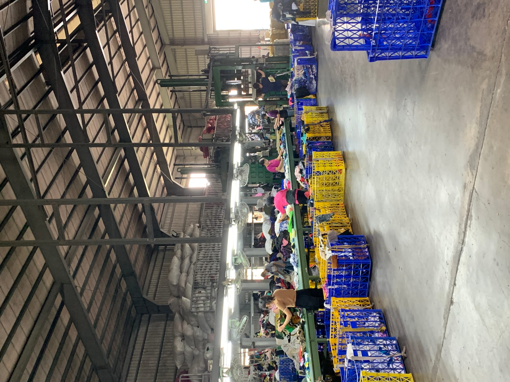
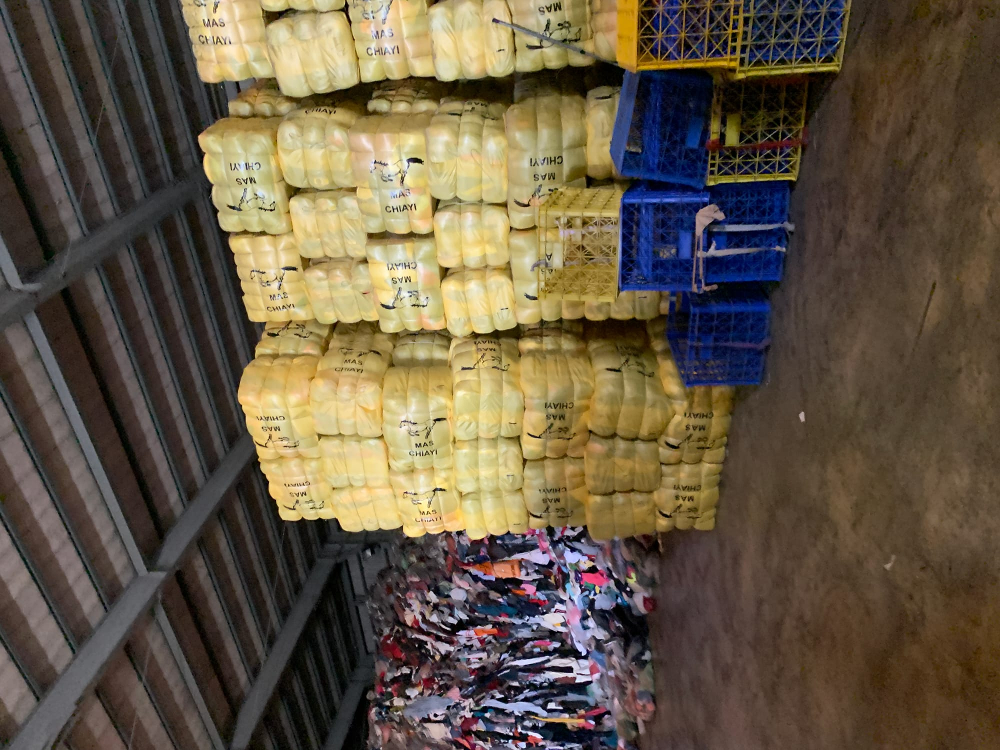
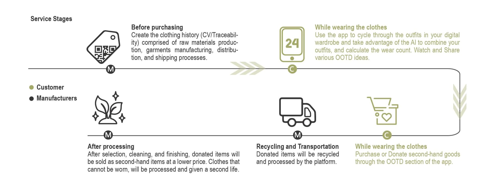

我們不僅是在設計單一產品，而是建構一套改變快時尚文化的整合性設計系統。
你知道快時尚是什麼嗎？
是指可以在短時間內將潮流服飾推出的商業模式。對於消費者來說，可以在短時間，以低廉的價格，買到新潮的服飾。而快時尚使消費者加快衣物汰換的速度，每件平均穿過的次數也逐漸降低，這也是造成環境衝擊的原因。
服飾產業成為全球第二大污染源
每年服裝產業所丟棄的垃圾高達九千兩百萬公噸以上，等同於131棟台北101建築總重。
快時尚導致過度生產又隨意丟棄衝擊環境，服裝產業的「快時尚」讓消費者用更便宜的價錢就能買到新衣服，具有多種款式選擇，但這其實是嚴重的環境危機，我們過度生產又隨意丟棄，導致服飾產業為全球第二大污染源。



透過品牌周邊教育文宣，傳遞正確的永續觀念，減少衝動購物。
點擊前往 Design →
透過24% APP設計數位衣櫃與穿搭紀錄，極大化衣物使用率。
透過循環織室空間，回收舊衣並拆解重製成新產品RE-Clothes Shoes。